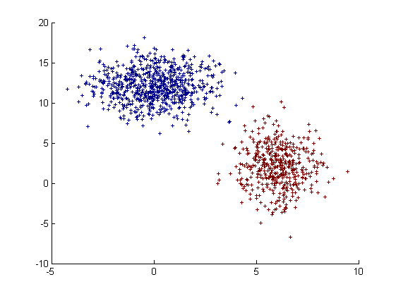
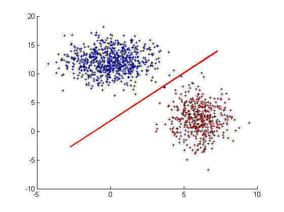

clc;
clear;
m1=[6;2];
s1=[1;2.5];
N1=450;
[x1,y1]=gaussDistrib2(m1(1),m1(2),s1(1),s1(2),N1);
C1=[x1;y1;ones(1,N1)];
clear m1 s1 x1 y1;
m2=[0;12];
s2=[1.5;2];
N2=750;
[x2,y2]=gaussDistrib2(m2(1),m2(2),s2(1),s2(2),N2);
C2=[x2;y2;-ones(1,N2)];
clear m2 s2 x2 y2;
figure, scatter([C1(1,:) C2(1,:)],[C1(2,:) C2(2,:)],20,[C1(3,:) C2(3,:)],'+');

tic
[a,b,c]=leastSquaresClassification(C1,C2);
toc
Elapsed time is 0.008611 seconds.
fprintf('Discriminant(ax+by+c=0) paramtres:\n[a,b,c]=[%.2f,%.2f,%.2f',a,b,c);
Discriminant(ax+by+c=0) paramtres:
[a,b,c]=[0.15,-0.09,0.16
C=[C1(1:2,:) C2(1:2,:)];
x0=mean(C(1,:),2)-5;
x1=mean(C(1,:),2)+5;
clear C;
y0=-(a*x0+c)/b;
y1=-(a*x1+c)/b;
figure, scatter([C1(1,:) C2(1,:)],[C1(2,:) C2(2,:)],20,[C1(3,:) C2(3,:)],'+');
line([x0 x1],[y0 y1],'LineWidth',2,'Color',[1 0 0]);
clear;
